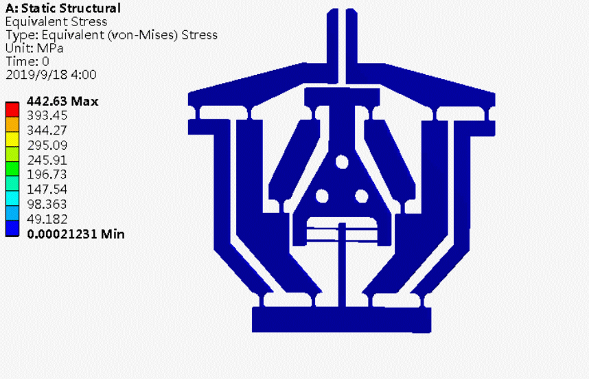

<!-- ===================================== -->
<!-- START PART 1: HEAD + NAVBAR + HERO -->
<!-- ===================================== -->
<!DOCTYPE html>
<html lang="en">
<head>
  <meta charset="UTF-8" />
  <meta name="viewport" content="width=device-width, initial-scale=1.0" />
  <title>Dr. Jiaxiang Zhu | FlexureX Lab</title>

  <!-- SEO & Social Metadata -->
  <meta name="description" content="Official website of Dr. Jiaxiang Zhu | FlexureX Lab — Compliant Mechanisms, Precision Robotics, and Flexure Design."/>
  <meta property="og:title" content="Dr. Jiaxiang Zhu | FlexureX Lab" />
  <meta property="og:description" content="Compliant Mechanisms • Precision Robotics • Flexure Design" />
  <meta property="og:image" content="logo.png" />
  <meta property="og:type" content="website" />
  <link rel="icon" type="image/png" href="logo.png" />

  <!-- Tailwind CDN -->
  <script src="https://cdn.tailwindcss.com"></script>

  <!-- Inline Styles -->
  <style>
    /* Global */
    html { scroll-behavior: smooth; }
    body {
      font-family: 'Inter', sans-serif;
      background-color: #ffffff;
      color: #1f2937;
      opacity: 0;
      animation: fadeInLoad 0.8s ease forwards;
    }

        /* Fade-in page load */
    @keyframes fadeInLoad {
      from { opacity: 0; }
      to   { opacity: 1; }
    }

    /* Section transition fade */
    .page-section {
      display: none;
      opacity: 0;
      transition: opacity 0.6s ease;
    }
    .page-section.active {
      display: block;
      opacity: 1;
    }

    /* Accent divider */
    .accent-line {
      width: 4rem;
      height: 0.25rem;
      background-color: #fbbf24; /* gold */
      border-radius: 9999px;
      margin: 0.75rem auto 1rem auto;
    }

<!-- Responsive Navbar -->
<nav class="fixed w-full z-50 bg-white/95 backdrop-blur-md shadow-lg">
  <div class="max-w-7xl mx-auto px-6 py-3 flex justify-between items-center">
    <!-- Left: Logo + Name -->
    <div class="flex items-center space-x-4">
      
      <h1 class="text-lg md:text-2xl font-extrabold text-indigo-900 tracking-tight">
        Dr. Jiaxiang Zhu | FlexureX Lab
      </h1>
    </div>

    <!-- Mobile menu button -->
    <button id="menu-toggle" class="md:hidden text-indigo-900 hover:text-amber-500 focus:outline-none">
      <!-- Hamburger icon -->
      <svg class="w-7 h-7" fill="none" stroke="currentColor" stroke-width="2" viewBox="0 0 24 24">
        <path stroke-linecap="round" stroke-linejoin="round"
              d="M4 6h16M4 12h16M4 18h16"/>
      </svg>
    </button>

    <!-- Navigation Links -->
    <div id="nav-links"
         class="hidden md:flex flex-col md:flex-row absolute md:static top-16 left-0 w-full md:w-auto bg-white md:bg-transparent
                md:space-x-6 text-center md:text-left font-semibold shadow-md md:shadow-none">
      <button data-target="home" class="nav-btn block py-3 md:py-0 text-indigo-900 hover:text-amber-500 border-b md:border-none">Home</button>
      <button data-target="about" class="nav-btn block py-3 md:py-0 text-indigo-900 hover:text-amber-500 border-b md:border-none">About</button>
      <button data-target="lab" class="nav-btn block py-3 md:py-0 text-indigo-900 hover:text-amber-500 border-b md:border-none">Lab</button>
      <button data-target="awards" class="nav-btn block py-3 md:py-0 text-indigo-900 hover:text-amber-500 border-b md:border-none">Awards</button>
      <button data-target="publications" class="nav-btn block py-3 md:py-0 text-indigo-900 hover:text-amber-500 border-b md:border-none">Publications</button>
      <button data-target="contact" class="nav-btn block py-3 md:py-0 text-indigo-900 hover:text-amber-500">Contact</button>
    </div>
  </div>
</nav>

<!-- JavaScript to toggle mobile menu -->
<script>
  const menuBtn = document.getElementById('menu-toggle');
  const navLinks = document.getElementById('nav-links');
  menuBtn.addEventListener('click', () => {
    navLinks.classList.toggle('hidden');
  });
</script>
   

<!-- HOME / HERO SECTION -->
<section id="home" class="page-section active min-h-screen flex flex-col justify-center items-center text-center pt-24 bg-indigo-950 text-white px-4">
  <!-- Portrait -->
<!-- Centered Portrait -->
<div class="flex justify-center w-full mb-6">
  
</div>
  
  <!-- Title and tagline -->
  <h1 class="text-4xl md:text-6xl font-extrabold mb-3">Dr. Jiaxiang Zhu</h1>
  <p class="text-lg md:text-2xl text-gray-200 mb-4">Lecturer in Mechanical Engineering | Aston University, UK</p>
  <p class="text-base md:text-lg font-medium tracking-wide text-amber-400">
    Compliant Mechanisms • Precision Robotics • Flexure Design
  </p>
</section>

<!-- ===================================== -->
<!-- END PART 1 -->
<!-- ===================================== -->
<!-- ===================================== -->
<!-- START PART 2: ABOUT + LAB + GALLERY -->
<!-- ===================================== -->

  <!-- ABOUT SECTION -->
  <section id="about" class="page-section pt-32 pb-16 max-w-5xl mx-auto px-6">
    <!-- Title -->
    <h2 class="text-4xl font-bold text-indigo-900 text-center mb-4">About</h2>
    <div class="accent-line"></div>

    <!-- About text -->
    <p class="text-lg mb-4">
      Dr. Jiaxiang Zhu is a Lecturer in Mechanical Engineering at Aston University, UK. His research specializes in the design, nonlinear analysis, and experimental validation of compliant mechanisms/flexible structures that enable precise motion for high-precision applications such as nano-positioning systems, surgical tools, and precision robotics.
    </p>
    <p class="text-lg mb-4">
      He obtained his Ph.D. from the University College Cork under the supervision of Prof. Guangbo Hao, focusing on the modeling, fabrication, and optimization of flexure-based mechanisms. His academic vision emphasizes bridging analytical modeling with real-world engineering design.
    </p>
    <p class="text-lg">
      His research interests include nonlinear compliant structures, high-precision actuation, robotic manipulation, and compliant design for biomedical and nano-engineering systems.
    </p>
  </section>

  <!-- FLEXUREX LAB SECTION -->
  <section id="lab" class="page-section pt-32 pb-16 max-w-6xl mx-auto px-6 text-center">
    <!-- Lab logo -->
    
    <h2 class="text-4xl font-bold text-indigo-900 mb-2">FlexureX Lab</h2>
    <p class="text-lg italic text-gray-600 mb-10">Ultra-precise motion via flexible structures</p>
    <div class="accent-line"></div>

    <!-- Design Gallery Intro -->
    <div class="text-center mb-12">
      <h3 class="text-4xl font-extrabold text-indigo-900 tracking-tight mb-3">Design Gallery</h3>
      <div class="accent-line"></div>
      <p class="text-lg text-gray-700 max-w-3xl mx-auto leading-relaxed">
        A curated collection of compliant mechanism designs and experimental prototypes developed during my PhD research under the supervision of
        <span class="font-medium text-indigo-800">Prof. Guangbo Hao</span>,
        in collaboration with
        <a href="https://sites.google.com/site/doctorghao/members" target="_blank" rel="noopener" class="font-semibold text-indigo-800 hover:underline">
          CoMAR 
        </a>
        (University College Cork).
      </p>
    </div>

  <!-- Full Design Gallery -->
<div class="text-left">
  <!-- Compliant Gripper -->
  <div class="mb-12">
    <h4 class="text-2xl font-semibold text-indigo-800 mb-3">Compliant Gripper</h4>
    <p class="text-gray-600 mb-4 italic">Scott–Russell mechanism–based compact compliant gripper (2020)</p>
    <div class="grid sm:grid-cols-2 md:grid-cols-4 gap-4">
      
      
      
      
    </div>
  </div>

  <!-- XY Compliant Parallel Manipulator -->
  <div class="mb-12">
    <h4 class="text-2xl font-semibold text-indigo-800 mb-3">XY Compliant Parallel Manipulator</h4>
    <p class="text-gray-600 mb-4 italic">Compact mirror-symmetrical XY compliant stage minimizing parasitic motion (2022)</p>
    <div class="grid sm:grid-cols-2 gap-4">
      
      
    </div>
  </div>

  <!-- Bistable Mechanisms -->
  <div class="mb-12">
    <h4 class="text-2xl font-semibold text-indigo-800 mb-3">Bistable Mechanisms</h4>
    <p class="text-gray-600 mb-4 italic">Nonlinear bistable compliant structures with controlled energy profiles (2023)</p>
    <div class="grid sm:grid-cols-2 md:grid-cols-4 gap-4">
      
      
      
      
    </div>
  </div>

  <!-- Compliant Amplifier -->
  <div class="mb-12">
    <h4 class="text-2xl font-semibold text-indigo-800 mb-3">Compliant Amplifier with Constant Amplification Ratio</h4>
    <p class="text-gray-600 mb-4 italic">Over-constraint-based compliant amplifier maintaining nearly constant amplification (2023)</p>
    <div class="flex justify-center">
      
    </div>
  </div>

  <!-- Spherical Joint -->
  <div class="mb-12">
    <h4 class="text-2xl font-semibold text-indigo-800 mb-3">Spherical Joint</h4>
    <p class="text-gray-600 mb-4 italic">Single-translation constraint-based compliant spherical joint (2024)</p>
    <div class="grid sm:grid-cols-2 md:grid-cols-4 gap-4">
      
      
      
      
    </div>
  </div>

  <p class="text-sm text-gray-500 mt-10 text-right italic">
    Designs and animations were generated during my PhD research under the supervision of Prof. Guangbo Hao.
  </p>
</div>


    <p class="text-sm text-gray-500 mt-10 text-right italic">
      Designs and animations were generated during my PhD research under the supervision of Prof. Guangbo Hao.
    </p>
  </section>

<!-- ===================================== -->
<!-- END PART 2 -->
<!-- ===================================== -->
<!-- ===================================== -->
<!-- START PART 3: AWARDS + PUBLICATIONS -->
<!-- ===================================== -->

<!-- ===================================== -->
<!-- START PART 3: AWARDS + PUBLICATIONS -->
<!-- ===================================== -->

  <!-- AWARDS SECTION -->
  <section id="awards" class="page-section pt-32 pb-16 max-w-6xl mx-auto px-6">
    <h2 class="text-4xl font-bold text-indigo-900 text-center mb-6">Awards & Honors</h2>
    <div class="accent-line"></div>

    <div class="grid sm:grid-cols-2 md:grid-cols-3 lg:grid-cols-4 gap-8">
      <div class="bg-white rounded-2xl shadow-lg overflow-hidden hover:shadow-xl transition">
        
        <div class="p-4 text-center">
          <p class="font-semibold text-indigo-800">ASME Compliant Mechanisms Award</p>
          <p class="text-gray-600 text-sm">American Society of Mechanical Engineers</p>
          <p class="text-gray-500 text-xs italic">2022</p>
        </div>
      </div>

      <div class="bg-white rounded-2xl shadow-lg overflow-hidden hover:shadow-xl transition">
        
        <div class="p-4 text-center">
          <p class="font-semibold text-indigo-800">Publication of the Year Award</p>
          <p class="text-gray-600 text-sm">School of Engineering & Architecture, UCC</p>
          <p class="text-gray-500 text-xs italic">2023</p>
        </div>
      </div>

      <div class="bg-white rounded-2xl shadow-lg overflow-hidden hover:shadow-xl transition">
        
        <div class="p-4 text-center">
          <p class="font-semibold text-indigo-800">Best Research Image</p>
          <p class="text-gray-600 text-sm">School of Engineering & Architecture, UCC</p>
          <p class="text-gray-500 text-xs italic">2021</p>
        </div>
      </div>

      <div class="bg-white rounded-2xl shadow-lg overflow-hidden hover:shadow-xl transition">
        
        <div class="p-4 text-center">
          <p class="font-semibold text-indigo-800">Student Mechanism & Robot Design Competition</p>
          <p class="text-gray-600 text-sm">ASME IDETC Conference – 2nd Place</p>
          <p class="text-gray-500 text-xs italic">2021 / 2022</p>
        </div>
      </div>
    </div>

    <p class="text-sm text-gray-500 mt-8 text-right italic">
      All awards and honors received by Dr. Jiaxiang Zhu, 2014–2024.
    </p>
  </section>

  <!-- PUBLICATIONS SECTION -->
  <section id="publications" class="page-section pt-32 pb-16 max-w-5xl mx-auto px-6">
    <h2 class="text-4xl font-bold text-indigo-900 text-center mb-6">Publications</h2>
    <div class="accent-line"></div>

    <!-- Journal Papers -->
    <h3 class="text-2xl font-semibold text-indigo-800 mb-4">Journal Papers</h3>
    <ul class="space-y-4 text-left text-gray-700 leading-relaxed">
      <li><strong>Zhu, J.</strong>, Li, S., & Hao, G. (2025). Nonlinear design of a general single-translation constraint and the resulting general spherical joint. <em>Journal of Mechanical Design</em>. <a href="https://doi.org/10.1115/1.4068101" class="text-indigo-700 hover:underline">DOI</a></li>
      <li><strong>Zhu, J.</strong>, & Hao, G. (2024). Modelling of a general lumped-compliance beam for compliant mechanisms. <em>International Journal of Mechanical Sciences</em>, 263, 108779. <a href="https://doi.org/10.1016/j.ijmecsci.2023.108779" class="text-indigo-700 hover:underline">DOI</a></li>
      <li><strong>Zhu, J.</strong>, Hao, G., Liu, T., & Li, H. (2023). Design of an over-constraint-based nearly-constant amplification ratio compliant mechanism. <em>Mechanism and Machine Theory</em>, 186, 105347. <a href="https://doi.org/10.1016/j.mechmachtheory.2023.105347" class="text-indigo-700 hover:underline">DOI</a></li>
      <li><strong>Zhu, J.</strong>, Hao, G., Li, S., & Kong, X. (2022). A compact mirror-symmetrical XY compliant parallel manipulator for minimizing parasitic rotations. <em>Journal of Mechanical Design</em>, 144(7), 073303. <a href="https://doi.org/10.1115/1.4053818" class="text-indigo-700 hover:underline">DOI</a></li>
      <li><strong>Zhu, J.</strong>, & Hao, G. (2020). Design and test of a compact compliant gripper using the Scott–Russell mechanism. <em>Archives of Civil and Mechanical Engineering</em>, 20, 1–12.</li>
      <li>Hao, G., & <strong>Zhu, J.</strong> (2019). Design of a monolithic double-slider based compliant gripper with large displacement and anti-buckling ability. <em>Micromachines</em>, 10(10), 665.</li>
      <li>Liu, T., Hao, G., <strong>Zhu, J.</strong>, Kuresangsai, P., Abdelaziz, S., & Wehrle, E. (2024). Modeling compliant bistable mechanisms: An energy method based on the high-order smooth curvature model. <em>International Journal of Mechanical Sciences</em>, 275, 109315.</li>
      <li>Li, S., Hao, G., Chen, Y., <strong>Zhu, J.</strong>, & Berselli, G. (2022). Nonlinear analysis of a class of inversion-based compliant cross-spring pivots. <em>Journal of Mechanisms and Robotics</em>, 14(3), 031007.</li>
      <li>Li, K., He, X., Lv, L., <strong>Zhu, J.</strong>, Hao, G., Li, H., & Song, X. (2023). A single-fidelity surrogate modeling method based on nonlinearity integrated multi-fidelity surrogate. <em>Journal of Mechanical Design</em>, 145(9).</li>
      <li>Hao, G., He, X., <strong>Zhu, J.</strong>, & Li, H. (2024). Design and Analysis of Leaf Beam Single-Translation Constraint Compliant Modules and the Resulting Spherical Joints. <em>Journal of Mechanical Design</em>, 146(8), 083301.</li>
      <li>Mokhtari, M., Varedi-Koulaei, S. M., <strong>Zhu, J.</strong>, & Hao, G. (2022). Topology optimization of compliant mechanisms considering curved beam elements using metaheuristic algorithms. <em>Proc. Inst. Mech. Eng. Part C: J. Mech. Eng. Sci.</em>, 236(13), 7197–7208.</li>
    </ul>

    <!-- Conference Papers -->
    <h3 class="text-2xl font-semibold text-indigo-800 mt-12 mb-4">Conference Papers</h3>
    <ul class="space-y-4 text-left text-gray-700 leading-relaxed">
      <li><strong>Zhu, J.</strong>, Hao, G., Ye, S. (2024, June). Nonlinear modelling of a novel single-translation constraint and centre drift analysis of the resulting spherical joint. In <em>MMT Symposium 2024</em>, Universidade do Minho.</li>
      <li>Song, X., Li, K., Wang, S., Kan, Z., Li, H., <strong>Zhu, J.</strong>, & Hao, G. (2022). Framework design of a digital twin of an XY compliant parallel manipulator based on non-negative matrix factorization. In <em>ASME IDETC/CIE</em>, V002T02A023.</li>
      <li><strong>Zhu, J.</strong>, Hao, G., Liu, T., & Li, H. (2022). Design and nonlinear analysis of an over-constraint-based constant amplification ratio compliant mechanism. In <em>ASME IDETC/CIE</em>, V007T07A005.</li>
      <li><strong>Zhu, J.</strong>, Hao, G., & Tang, H. (2022). Design and modelling of a generic compliant mechanism with bi-stability and static balancing. In <em>IEEE 3M-NANO 2022</em>, 172–177.</li>
      <li><strong>Zhu, J.</strong>, Hao, G., Li, S., Yu, S., & Kong, X. (2021). A mirror-symmetrical XY compliant parallel manipulator with improved performances without increasing the footprint. In <em>ASME IDETC/CIE</em>, V08AT08A012.</li>
      <li>Li, S., Hao, G., Chen, Y., <strong>Zhu, J.</strong>, & Berselli, G. (2021). Nonlinear analysis of a class of inversion-based compliant cross-spring pivots. In <em>ASME IDETC/CIE</em>, V08AT08A011.</li>
    </ul>

    <p class="text-sm text-gray-500 mt-8 text-right italic">Last updated: October 2025</p>
  </section>

<!-- ===================================== -->
<!-- END PART 3 -->
<!-- ===================================== -->


  <!-- CONTACT SECTION -->
  <section id="contact" class="page-section pt-32 pb-16 text-center max-w-4xl mx-auto px-6">
    <h2 class="text-4xl font-bold text-indigo-900 mb-6">Contact</h2>
    <div class="accent-line"></div>

    <p class="text-lg text-gray-700 mb-4">Lecturer, School of Engineering and Innovation, Aston University, UK</p>
    <p class="text-gray-700 mb-2">
      Email: <a href="mailto:j.zhu13@aston.ac.uk" class="text-indigo-700 hover:underline">j.zhu13@aston.ac.uk</a>
    </p>
    <p class="text-gray-700 mb-6">Phone: +353 (0)833 748 734</p>

    <div class="flex justify-center space-x-8 text-2xl text-indigo-800">
      <a href="https://scholar.google.com/citations?user=tnW-jAoAAAAJ&hl=en" target="_blank" rel="noopener" class="hover:text-amber-500 transition">Google Scholar</a>
      <a href="https://www.researchgate.net/profile/Jiaxiang-Zhu?ev=hdr_xprf" target="_blank" rel="noopener" class="hover:text-amber-500 transition">ResearchGate</a>
      <a href="https://www.linkedin.com/in/jiaxiang-zhu-jz" target="_blank" rel="noopener" class="hover:text-amber-500 transition">LinkedIn</a>
    </div>
  </section>

  <!-- FOOTER -->
  <footer>© 2025 Jiaxiang Zhu | FlexureX Lab</footer>

  <!-- JAVASCRIPT FOR TRANSITIONS -->
  <script>
    // Select all navigation buttons
    const navButtons = document.querySelectorAll('.nav-btn');
    const sections = document.querySelectorAll('.page-section');

    // Function to show target section with fade effect
    function showSection(targetId) {
      sections.forEach(sec => {
        if (sec.id === targetId) {
          sec.classList.add('active');
          setTimeout(() => { sec.style.display = 'block'; }, 100);
        } else {
          sec.classList.remove('active');
          setTimeout(() => { sec.style.display = 'none'; }, 600);
        }
      });
      window.scrollTo({ top: 0, behavior: 'smooth' });
    }

    // Attach click events
    navButtons.forEach(btn => {
      btn.addEventListener('click', () => {
        const target = btn.getAttribute('data-target');
        showSection(target);
      });
    });
  </script>
</body>
</html>
<!-- ===================================== -->
<!-- END PART 4 / END OF DOCUMENT -->
<!-- ===================================== -->
